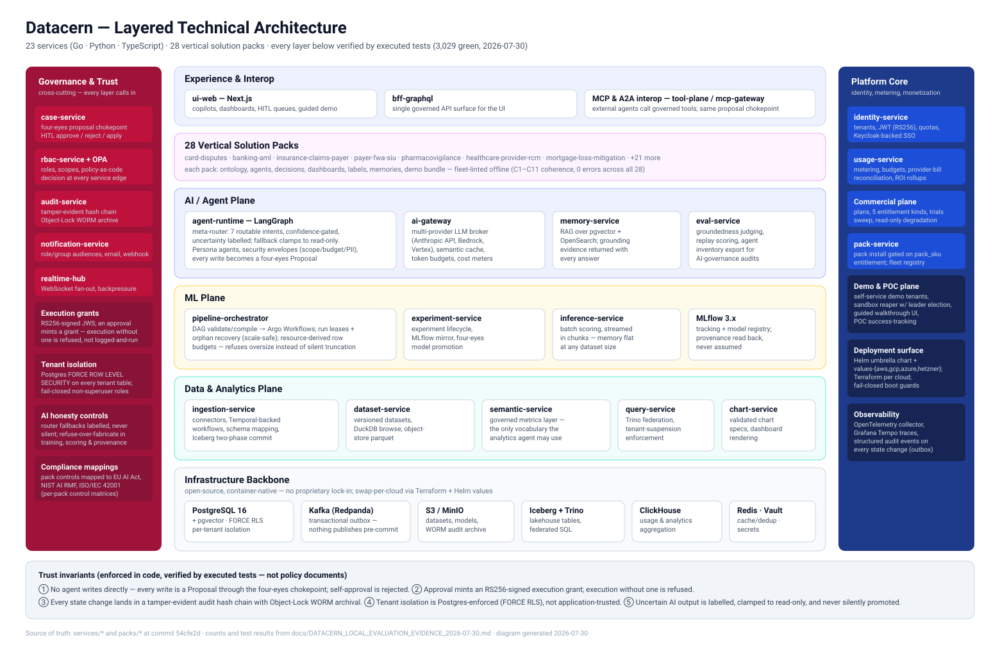
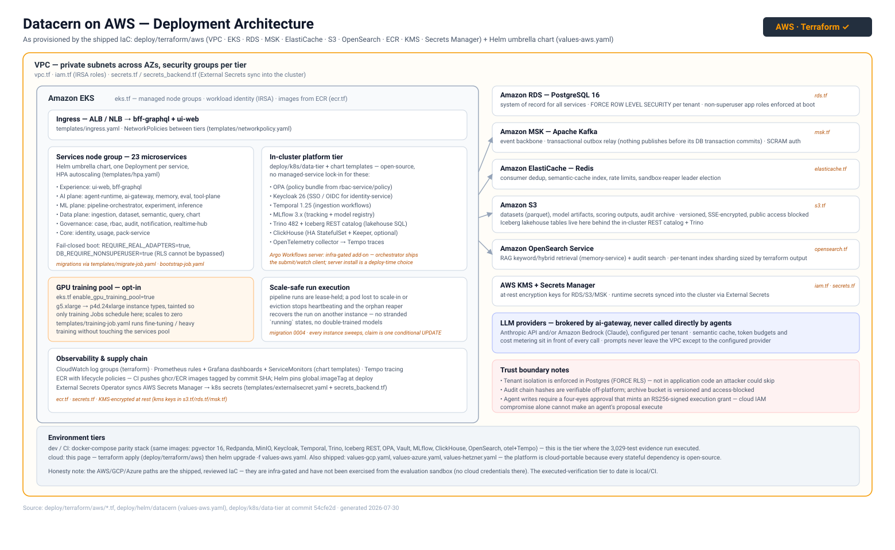
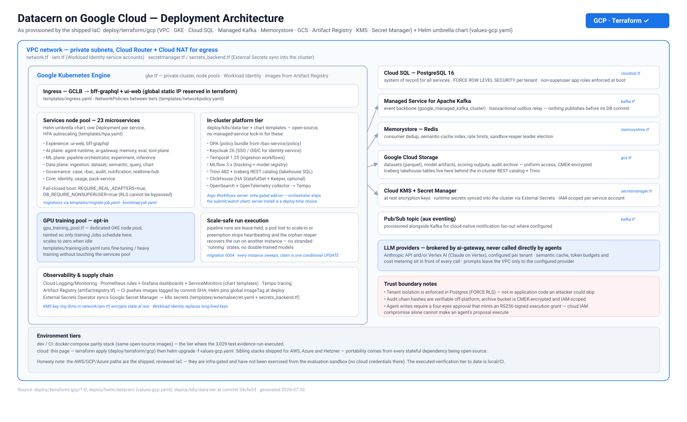
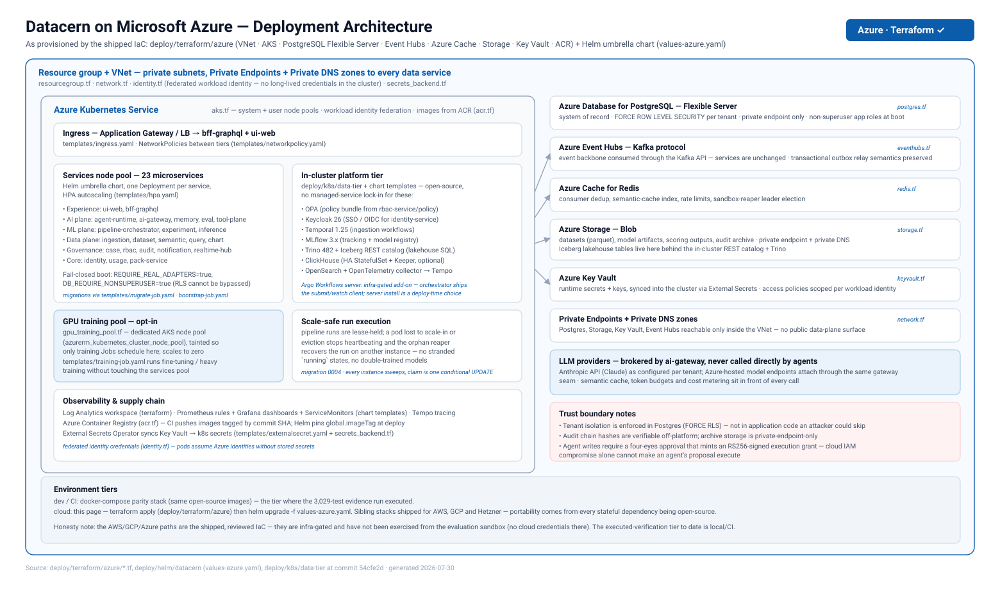

One governed platform.
Your cloud, your data, your approvals.
Datacern runs 23 containerized services in five planes — experience, AI agents, ML, data, and a governance rail that stands between every agent and every consequential action. Every stateful dependency is open source, so the same Helm chart deploys to AWS, Google Cloud, Azure, Hetzner, or your own Kubernetes — each with a Terraform stack shipped in the platform repository.
Diagrams generated from the shipped code and IaC · verified by 3,029 executed tests (2026-07-30)Layered technical architecture
Five planes over an all-open-source backbone, wrapped by two rails: governance & trust (four-eyes approvals, RS256-signed execution grants, tamper-evident audit chain, Postgres-enforced tenant isolation) and platform core (identity, metering, entitlements, demo/POC plane). 28 vertical solution packs configure the same spine per regulated workflow.

Deployment on AWS
EKS runs the services and the open-source platform tier; RDS PostgreSQL, MSK Kafka, ElastiCache, S3 and OpenSearch are managed; KMS + Secrets Manager feed the cluster via External Secrets. An opt-in GPU node pool (g5 → p4d) runs training jobs and scales to zero.

Deployment on Google Cloud
GKE private cluster with Workload Identity; Cloud SQL PostgreSQL, Managed Service for Apache Kafka, Memorystore and GCS are managed; Secret Manager + Cloud KMS feed the cluster. Same services, same chart — only the substrate changes.

Deployment on Microsoft Azure
AKS with federated workload identity; PostgreSQL Flexible Server, Event Hubs (Kafka protocol), Azure Cache and Blob Storage sit behind private endpoints with private DNS — no public data plane. Key Vault feeds the cluster via External Secrets.

Verification status — stated plainly
The layered architecture and every service behaviour on it were verified by execution on 2026-07-30: 3,029 tests green across all 23 services, plus live train-to-model-registry and agent-routing proofs (docs/DATACERN_LOCAL_EVALUATION_EVIDENCE_2026-07-30.md). The AWS / GCP / Azure paths are the shipped, reviewed Terraform + Helm in this repository; they are infra-gated and have not yet been applied from the evaluation environment. The continuously-executed tier (local/CI) runs the same images against protocol-identical open-source infrastructure — that parity is the basis of the portability claim.